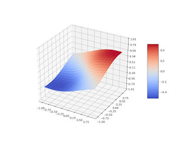
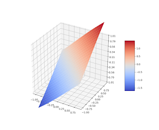

The Normal Splines Method
The Normal Splines Method
A problem of reconstruction of multivariate dependency under incomplete data set arises in many areas of research. Often there is a finite set of experimental measurements $\{ \tilde u_i\}_{i=1}^m$ and we may treat an unknown function $\varphi (x)$ as an element of a Hilbert space $H(R^n)$. Consider the following data model
\[\tag{1} (f_i ,\varphi) = u_i \, , \qquad \tilde u_i\ = u_i + \epsilon_i \, \qquad 1 \le i \le \ m,\]
where $\{f_i\}$ are linear continuous functionals, $\{u_i\}$ - "exact value of measurement", and $\{\epsilon_i\}$ - random values uniformly distributed in $\left[ -\delta , \delta \right]$. Hence we have a system of constraints
\[\tag{2} \left| (f_i ,\varphi) - \tilde u_i \right| \le \delta \, , \qquad 1 \le i \le \ m \, .\]
Problem of the function $\varphi$ reconstruction is under-determined. We will approximate $\varphi$ by constructing an element of minimal norm from the set of the system (2) solutions. Let's introduce a penalty functional $J$
\[(J, \varphi) = { \| \varphi\| }_H ^2 \ ,\]
and find a function $\varphi$ in the Hilbert space $H$ to minimize $J$ subject to (2) (here $\| \cdot \|_H$ denotes the $H$ norm). Solution of this problem is a generalized spline of Atteia-Laurent [1]. We name it a normal spline following to the V. Gorbunov work [2] where the normal spline-collocation method for linear ordinary differential and integral equations was developed.
The normal spline method consists of a Hilbert norm minimization on the set of a collocation system solutions. In contrast to the classical collocation methods the basis system here is not given a priory, instead it is constructed in accordance with the chosen Hilbert space norm. The base functions are canonical images of the continuous linear functionals presented as inner product in the Hilbert space. Such functional presentation can be found if the Hilbert space $H$ is a reproducing kernel Hilbert space and the corresponding reproducing kernel is known. In order to construct a reproducing kernel useful for a case of one-dimensional problems treated in [2] it was sufficient to suppose the Hilbert space $H$ is a classical Sobolev space with integer order. Multivariate generalization of the normal spline method described in this blog was done ([6] — [10]) with usage of the Bessel potential spaces [3].
Essentially the normal spline method is based on classical functional analysis results: the Sobolev and Bessel potential space embedding theorems [4], the F.Riesz representation theorem [5] and Reproducing kernel properties.
Here and further we assume that $\{f_i\}$ are linearly independent functionals therefore the set of the system (2) solutions is not empty, convex and closed one. It is known that every closed convex set in a Hilbert space has a unique element of minimal norm [1, 5] - here it is a uniform smoothing normal spline:
\[\tag{3} \sigma = {\mathop{\rm arg\,min}\nolimits} \lbrace {\| \varphi \| }^2_H : (2) \rbrace \ .\]
In general a normal spline can be treated as a projection of an element of a Hilbert space to a closed convex set in that Hilbert space. Thereby the problem (3) always has the unique solution.
In accordance with Riesz representation theorem [5] every linear continuous functional $f_i$ on a Hilbert space $H$ can be represented as inner product of some element $h_i \in H$ and $\varphi \in H$, for any $\varphi \in H$ :
\[ (f_i ,\varphi) = {\langle h_i , \varphi \rangle}_H \, , \qquad \forall \varphi \in H \ ,\]
where ${\langle \cdot , \cdot \rangle}_H$ - inner product in $H$. Then (2) can be written in form:
\[\tag{4} | {\langle h_i , \varphi \rangle}_H - \tilde u_i | \le \delta \, , \qquad 1 \le i \le m \ .\]
and problem (2) is reduced to:
\[\tag{5} \sigma = {\mathop{\rm arg\,min}\nolimits} \lbrace {\langle \varphi , \varphi \rangle}_H : (4) \rbrace \ .\]
In accordance with extremum conditions for the problem (5) its solution can be presented in form [1]:
\[ \sigma = \sum _{j=1} ^m (\mu _j - \mu _{j+m}) h_j \ , \quad \quad \mu _j \le 0 , \quad \mu _{j+m} \le 0 , \quad 1\le j \le m .\]
It allows to reduce the initial problem (5) of constructing a uniform smoothing normal spline to solving a finite-dimensional quadratic programming problem:
\[\tag{6} \begin{aligned} & \sigma = {\mathop{\rm arg\,min}} \Big\lbrace {\sum _{i=1} ^m \sum _{j=1} ^m (\mu _i - \mu _{i+m}) (\mu _j - \mu _{j+m}) g_{ij}} : (10), (11) \Big\rbrace \ , \\ & \Big| \sum _{j=1} ^m g_{ij} (\mu _j - \mu _{j+m}) - \tilde u_i \Big| \, \le \, \delta \, , \qquad 1 \le i \le m \ , \\ & \mu _j \le 0 , \quad \mu _{j+m} \le 0 , \quad 1\le j \le m \ , \end{aligned}\]
here $g_{ij}={\langle h_i , h_j \rangle}_H$ - coefficients of the symmetric Gram matix of the set of the elements $\{h_i\}, h_i \in H$. Notice that elements $\{h_i\}$ (images of functionals $\{f_i\}$) are linearly independent therefore the Gram matrix is a positive definite one.
It was shown [13] that it is not necessary to formulate the problem (6) in its explicit form. A special version of algorithm for solving this simple quadratic programming problem will be described in the next sections.
Results related to multidimensional normal spline method and its applications were published in works [6, 10] and presented at conferences [8, 9, 11, 12].
References
[1] P.-J. Laurent, Approximation et optimization, Paris, 1972.
[2] V. Gorbunov, The method of normal spline collocation. USSR Comput.Maths.Math.Phys., Vol. 29, No. 1, 1989
[3] N. Aronszajn, K. Smith, Theory of bessel potentials I, Ann.Inst.Fourier, 11, 1961.
[4] S. Sobolev, Some applications of functional analysis in mathematical physics, AMS, 2008.
[5] A. Balakrishnan, Applied Functional Analysis, New York, Springer-Verlag, 1976.
[6] I. Kohanovsky, Normal Splines in Computing Tomography (in Russian). Avtometriya, No.2, 1995
[7] I. Kohanovsky, Data approximation using multidimensional normal splines, Unpublished manuscript, 1996.
[8] I. Kohanovsky, Multidimensional Normal Splines and Problem of Physical Field Approximation, International Conference on Fourier Analysis and its Applications, Kuwait, 1998.
[9] I. Kohanovsky, Normal splines in fractional order Sobolev spaces and some of its applications, The Third Siberian Congress on Applied and Industrial mathematics (INPRIM-98), Novosibirsk, 1998.
[10] V. Gorbunov, I. Kohanovsky, K. Makedonsky, Normal splines in reconstruction of multi-dimensional dependencies. Papers of WSEAS International Conference on Applied Mathematics, Numerical Analysis Symposium, Corfu, 2004
[11] I. Kohanovsky, Inequality-Constrained Multivariate Normal Splines with Some Applications in Finance. 27th GAMM-Seminar Leipzig on Approximation of Multiparametric functions, Max-Planck-Institute for Mathematics in the Sciences, Leipzig, Germany, 2011.
[12] V. Gorbunov, I. Kohanovsky, Heterogeneous Parallel Method for the Construction of Multi-dimensional Smoothing Splines. ESCO 2014 4th European Seminar on Computing, University of West Bohemia, Plzen, Czech Republic, 2014.
[13] V. Gorbunov, Extremum Problems of Measurements Data Processing. Ilim Publishers, Frunze, 1990 (in Russian).
\[~\]
The Riesz representation of functionals and a reproducing kernel Hilbert space
In this section we discuss a way of constructing a Riesz representer of the continuous linear functional $f$ on a Hilbert space $H$, assuming the space $H$ is a reproducing kernel Hilbert space. Let's recall the Riesz representation theorem and the reproducing kernel Hilbert space definition.
Riesz representation theorem ([1]): If $f$ is a linear continuous functional on a Hilbert space $H$ then there exists some $h \in H$ such that for every $\varphi \in H$ we have
\[ (f, \varphi) = {\langle \varphi , h \rangle}_H\]
Reproducing Kernel Hilbert space definition ([2]): A Hilbert space $H(R^n)$ is called a reproducing kernel Hilbert space (RKHS) if there is a reproducing kernel function $K(\eta, x)$ of $\eta$ and $x$ in $R^n$ such that:
- For any $x \in R^n$ the function $K(\eta, x)$ belongs to $H(R^n)$ as a function of the $\eta$.
- The reproducing property: for any $x \in R^n$ and any $\varphi \in H(R^n)$, the following equality is valid:
$\qquad \qquad \qquad \qquad \qquad \qquad \qquad \qquad \qquad \varphi (x) = {\langle \varphi(\eta) , K(\eta , x) \rangle}_H$
Inner product here applies to functions of $\eta$. It is known, if a reproducing kernel exists it is unique and it is symmetric with respect to the $\eta$ and $x$ ([2]): $K(\eta , x) = K(x, \eta)$.
Let $K(\eta, x)$ is a reproducing kernel of the Hilbert space $H(R^n)$, then we can find the Riesz representer $h$ of the functional $f$. Namely:
\[ h (x) = (f, K (\cdot, x)) \, .\]
Indeed, by reproducing property:
\[ h (x) = {\langle h , K(\cdot , x) \rangle}_H\]
but since the $h$ is a Riesz representer of the $f$:
\[ {\langle h , K(\cdot , x) \rangle}_H = (f , K(\cdot , x) ) \,\]
here $K(\eta, x) \in H$ as a function of the $\eta$.
Let's we have a set of the continuous linear functionals $\{f_i\}$ on Hilbert space $H$ and the corresponding set of their Riesz representers $\{h_i\}$. Then coefficients $g_{ij}$ of the Gram matrix of elements $\{h_i\}$ can be found as follows:
\[ \qquad \qquad g_{ij} = {\langle h_i , h_j \rangle}_H = (f_i , h_j) = \bigl(f_i , ( f_j , K ) \bigr) \ .\]
References
[1] A. Balakrishnan. Applied Functional Analysis. // New York: Springer-Verlag, 1976.
[2] N. Aronszajn, Theory of reproducing kernels, Transactions of the AMS, Vol. 68, No. 3, 1950.
\[~\]
Reproducing Kernel of Bessel potential space
The standard definition of Bessel potential space $H^s$ can be found in ([1], [2], [6], [11], [12]). Here the normal splines will be constructed in the Bessel potential space $H^s_\varepsilon$ defined as:
\[ H^s_\varepsilon (R^n) = \left\{ \varphi | \varphi \in S' , ( \varepsilon ^2 + | \xi |^2 )^{s/2}{\mathcal F} [\varphi ] \in L_2 (R^n) \right\} , \quad \varepsilon \gt 0 , \ s \gt \frac{n}{2} .\]
where $S' (R^n)$ is space of L. Schwartz tempered distributions, parameter $s$ may be treated as a fractional differentiation order and $\mathcal F [\varphi ]$ is a Fourier transform of the $\varphi$. The parameter $\varepsilon$ introduced here may be considered as a "scaling parameter". It allows to control approximation properties of the normal spline which usually are getting better with smaller values of $\varepsilon$, also it may be used to reduce the ill-conditioness of the related computational problem (in traditional theory $\varepsilon = 1$).
Theoretical properties of spaces $H^s_\varepsilon$ at $\varepsilon \gt 0$ are identical — they are Hilbert spaces with inner product
\[\langle \varphi , \psi \rangle _{H^s_\varepsilon} = \int ( \varepsilon ^2 + | \xi |^2 )^s \mathcal F [\varphi ] \overline{\mathcal F [\psi ] } \, d \xi\]
and norm
\[\| \varphi \|_ {H^s_\varepsilon} = \left( \int ( \varepsilon ^2 + | \xi |^2 )^s \mathcal | F [\varphi ] |^2 \, d \xi \ \right)^{1/2} \ .\]
It is easy to see that all $\| \varphi \|_{H^s_\varepsilon}$ norms are equivalent. It means that space $H^s_\varepsilon (R^n)$ is equivalent to $H^s (R^n) = H^s_1 (R^n)$.
Let's describe the Hölder spaces $C_b^t(R^n), t \gt 0$ ([9], [2]).
Definition 1. We denote the space
\[ S(R^n) = \left\{ f | f \in C^\infty (R^n) , \sup_{x \in R^n} | x^\alpha D^\beta f(x) | \lt \infty , \forall \alpha, \beta \in \mathbb{N}^n \right\}\]
as Schwartz space (or space of complex-valued rapidly decreasing infinitely differentiable functions defined on $R^n$) ([6], [7]).
Below is a definition of Hölder space $C^t_b(R^n)$ [9]:
Definition 2. If $0 \lt t = [t] + \{t\}, [t]$ is non-negative integer, $0 \lt \{t\} \lt 1$, then $C^t_b(R^n)$ denotes the completion of $S(R^n)$ in the norm
\[\begin{aligned} C^t_b (R^n) &= \left\{ f | f \in C^{[t]}_b (R^n) , \| f \|_{C^t_b} \lt \infty \right\} , \\ \| f \|_{C^t_b} &= \| f \|_{C_b^{[t]}} \, + \, \sum _{|\alpha | = [t]} \sup _{x \ne y} \frac {| D^\alpha f(x) - D^\alpha f(y) | } { | x - y |^{\{t\}}} \ , \\ \| f \|_{C_b^{[t]}} &= \sup _{x \in R^n} | D^\alpha f(x) |, \, \forall \alpha : | \alpha | \le [t]. \end{aligned}\]
Space $C^{[t]}_b (R^n)$ consists of all functions having bounded continuous derivatives up to order $[t]$. It is easy to see that $C_b^t(R^n)$ is Banach space [9].
Connection of Bessel potential spaces $H^s(R^n)$ with the spaces $C_b^t(R^n)$ is expressed in Embedding theorem ([9], [2]).
Embedding Theorem: If $s = n/2+t$, where $t$ non-integer, $t \gt 0$, then space $H^s(R^n)$ is continuously embedded in $C_b^t(R^n)$.
Particularly from this theorem follows that if $f \in H^{n/2 + 1/2}_\varepsilon (R^n)$, corrected if necessary on a set of Lebesgue measure zero, then it is uniformly continuous and bounded. Further if $f \in H^{n/2 + 1/2 + r}_\varepsilon (R^n)$, $r$ — integer non-negative number, then it can be treated as $f \in C^r (R^n)$, where $C^r (R^n)$ is a class of functions with $r$ continuous derivatives.
It can be shown ([3], [11], [8], [4], [5]) that function
\[\begin{aligned} & V_s ( \eta , x, \varepsilon ) = c_V (n,s,\varepsilon) (\varepsilon |\eta - x | )^{s - \frac{n}{2}} K_{s - \frac{n}{2}} (\varepsilon |\eta - x | ) \ , \\ & c_V (n,s,\varepsilon) = \frac{\varepsilon ^{n-2s}} { 2^{s-1} (2 \pi )^{n/2} \Gamma (s) }, \ \eta \in R^n, \ x \in R^n, \ \varepsilon \gt 0 , s \gt \frac{n}{2} \end{aligned}\]
is a reproducing kernel of $H^s_\varepsilon (R^n)$ space. Here $K_{\gamma}$ is modified Bessel function of the second kind [10]. The exact value of $c_V (n,s,\varepsilon)$ is not important here and will be set to $\sqrt{\frac{2}{\pi}}$ for ease of further calculations.
This reproducing kernel is known as Matérn kernel [4,13].
The kernel $K_{\gamma}$ becomes especially simple when $\gamma$ is half-integer.
\[ \gamma = r + \frac{1}{2} \ , (r = 0, 1, \dots ).\]
In this case it is expressed via elementary functions (see [10]):
\[\begin{aligned} K_{r+1/2}(t) &= \sqrt{\frac{\pi} {2t}} t^{r+1} \left ( - \frac{1}{t} \frac{d}{dt} \right )^{r+1} \exp (-t) \ , \\ K_{r+1/2}(t) &= \sqrt{\frac{\pi} {2t}} \exp (-t) \sum_{k=0}^r \frac{(r+k)!}{k! (r-k)! (2t)^k} \ , \ (r = 0, 1, \dots ) \ . \end{aligned}\]
Let $s_r = r + \frac{n}{2} + \frac{1}{2}, \ r = 0, 1, \dots$, then $H^{s_r}_\varepsilon(R^n)$ is continuously embedded in $C_b^r(R^n)$ and its reproducing kernel with accuracy to constant multiplier can be presented as follows
\[\begin{aligned} V_{r + \frac{n}{2} + \frac{1}{2}}(\eta , x, \varepsilon) &= \exp (-\varepsilon |\eta - x |) \sum_{k=0}^{r} \frac{(r+k)!}{2^k k! (r-k)!} (\varepsilon |\eta - x |)^{r-k} \ , \\ & (r = 0, 1, \dots ) \ . \end{aligned}\]
In particular we have:
\[\begin{aligned} & V_{\frac{n}{2} + \frac{1}{2}}(\eta , x, \varepsilon) = \exp (-\varepsilon |\eta - x |) \ , \\ & V_{1 + \frac{n}{2} + \frac{1}{2}}(\eta , x, \varepsilon) = \exp (-\varepsilon |\eta - x |) (1 + \varepsilon |\eta - x |) \ , \\ & V_{2 + \frac{n}{2} + \frac{1}{2}}(\eta , x, \varepsilon) = \exp (-\varepsilon |\eta - x |) (3 + 3\varepsilon |\eta - x | + \varepsilon ^2 |\eta - x | ^2 ) \ , \\ & V_{3 + \frac{n}{2} + \frac{1}{2}}(\eta , x, \varepsilon) = \exp (-\varepsilon |\eta - x |) (15 + 15\varepsilon |\eta - x | + 6\varepsilon ^2 |\eta - x | ^2 + \varepsilon ^3 |\eta - x | ^3 ) \ . \end{aligned}\]
References
[1] D. Adams, L. Hedberg, Function spaces and potential theory. Berlin, Springer, 1996.
[2] M. Agranovich, Sobolev Spaces, Their Generalizations and Elliptic Problems in Smooth and Lipschitz Domains, Springer, Switzerland, 2015.
[3] N. Aronszajn, K. Smith, Theory of bessel potentials I, Ann.Inst.Fourier, 11, 1961.
[4] G. Fasshauer, Green’s Functions: Taking Another Look at Kernel Approximation, Radial Basis Functions, and Splines. In: Neamtu M., Schumaker L. (eds) Approximation Theory XIII: San Antonio 2010. Springer Proceedings in Mathematics, vol 13. Springer, New York, 2012.
[5] I. Kohanovsky, Multidimensional Normal Splines and Problem of Physical Field Approximation, International Conference on Fourier Analysis and its Applications, Kuwait, 1998.
[6] S. Nikol'skiĭ, Approximation of functions of several variables and imbedding theorems, Grundl. Math. Wissensch., 205, Springer-Verlag, New York, 1975.
[7] M. Reed, B. Simon, Methods of Modern Mathematical Physics, I: Functional Analysis, Academic Press, 1972.
[8] R. Schaback, Kernel-based Meshless Methods, Lecture Notes, Goettingen, 2011.
[9] H. Triebel, Interpolation. Function Spaces. Differential Operators, North-Holland, Amsterdam, 1978.
[10] G. Watson, A Treatise on the Theory of Bessel Functions ( 2nd.ed.), Cambridge University Press, 1966.
[11] H. Wendland, Scattered Data Approximation. Cambridge University Press, 2005.
[12] J. Lions, E. Magenes, Problemes Aux Limites Non-Homogenes et Applications Vol. 1, Dunod, Paris, 1968.
[13] G. Fasshauer, M. McCourt, Kernel-Based Approximation Methods Using Matlab, World Scientific, Singapore, 2015.
\[~\]
Hermite-Birkhoff Interpolation of Scattered Data
Consider the following interpolation problem:
Problem: Given points $\{p_i, p_i \in R^n\}_{i=1}^{n_1}$, $\{s_j, s_j \in R^n\}_{j=1}^{n_2}$ and a set of unit vectors $\{e_j, e_j \in R^n\}_{j=1}^{n_2}$ find a function $f$ such that
\[\tag{1} \begin{aligned} & f(p_i) = u_i \, , \quad i = 1, 2, \dots, n_1 \, , \\ & \frac{ \partial{f} }{ \partial{e_j} }(s_j) = v_j \, , \ j = 1, 2, \dots, n_2 \, , \\ & n_1 \gt 0 \, , \ \ n_2 \ge 0 \, . \end{aligned}\]
where $\frac{ \partial{f} }{ \partial{e_j} }(s_j) = \nabla f(s_j) \cdot e_j = \sum _{k=1}^{n} \frac{ \partial{f} }{ \partial{x_k} } (s_j) e_{jk}$ is a directional derivative of $f$ at the point $s_j$ in the direction of $e_j$.
We assume that function $f$ is an element of the Bessel potential space $H^s_\varepsilon (R^n)$ which is defined as:
\[ H^s_\varepsilon (R^n) = \left\{ \varphi | \varphi \in S' , ( \varepsilon ^2 + | \xi |^2 )^{s/2}{\mathcal F} [\varphi(\xi)] \in L_2 (R^n) \right\} , \ \ \varepsilon \gt 0 , \ s = n/2 + 1/2 + r \, , \ \ r = 1,2,\dots \, .\]
where $| \cdot |$ is the Euclidean norm, $S' (R^n)$ is space of L. Schwartz tempered distributions, parameter $s$ may be treated as a fractional differentiation order and $\mathcal F [\varphi ]$ is a Fourier transform of the $\varphi$. The parameter $\varepsilon$ can be considered as a "scaling parameter", it allows to control approximation properties of the normal spline which usually are getting better with smaller values of $\varepsilon$, also it can be used to reduce the ill-conditioness of the related computational problem (in traditional theory $\varepsilon = 1$).
Theoretical properties of spaces $H^s_\varepsilon$ at $\varepsilon \gt 0$ are identical — they are Hilbert spaces with inner product
\[\langle \varphi , \psi \rangle = \int ( \varepsilon ^2 + | \xi |^2 )^s \mathcal F [\varphi(\xi) ] \overline{\mathcal F [\psi(\xi) ] } \, d \xi\]
and norm
\[\| \varphi \| = \left( \int ( \varepsilon ^2 + | \xi |^2 )^s \mathcal | {\mathcal F} [\varphi(\xi) ] |^2 \, d \xi \ \right)^{1/2} \ .\]
It is easy to see that all these norms are equivalent. It means that space $H^s_\varepsilon (R^n)$ is equivalent to $H^s (R^n) = H^s_1 (R^n)$.
Obviously, $\| \varphi \|_ {H^s_\varepsilon} \le \| \varphi \|_ {H^t_\varepsilon}$ if $s < t$, so that the space with larger index is continuously embedded in the space with smaller index. The space $H^0_\varepsilon (R^n)$ coincides with $L_2 (R^n)$ in view of Parseval’s identity
\[ \int \mathcal | {\mathcal F} [\varphi ] |^2 \, d \xi \ = \int \mathcal |\varphi|^2 \, dx \]
and the norms on these spaces coincide. Therefore, all spaces $H^s_\varepsilon (R^n)$ with nonnegative $s$ consist of usual square integrable (i.e., having integrable square of absolute value) functions [3].
It can be shown that for any positive integer $m$ the space $H^m_\varepsilon (R^n)$ consists of all square integrable functions whose derivatives in the sense of distributions up to order m are square integrable [3]. The norm on $H^m_\varepsilon (R^n)$ can be defined by
\[\| \varphi \|' = \left( \int \Big [ \varepsilon^2 | \varphi (x) |^2 + \sum_{|\alpha| = m} \frac{m!}{\alpha!} |D^\alpha \varphi (x) |^2 \Big ] \, d x \ \right)^{1/2} \, ,\]
here $\alpha = (\alpha_1, \dots, \alpha_n )$ is multi-index with nonnegative integral entries, $| \alpha | = \alpha_1 + \dots + \alpha_n$, $\, \alpha ! = \alpha_1 ! \dots \alpha_n !$ and $D^\alpha \varphi (x) = \frac{ \partial^{|\alpha|}{\varphi} }{ \partial{x_1^{\alpha_1}} \dots x_n^{\alpha_n}}$. The norms $\| \varphi \|$ and $\| \varphi \|'$ are equivalent and space $H^m_\varepsilon (R^n)$ coincides with Sobolev space.
Hilbert space $H^s_\varepsilon (R^n)$ is continuously embedded in Hölder space $C_b^r(R^n)$ ([3],[17],[20]) of functions continuous and bounded with their first $r$ derivatives, it means function $f$ can be treated as an element of function class $C^r(R^n)$ of functions continuous with their first $r$ derivatives. Therefore functionals $F_i$ and $F'_j$
\[\begin{aligned} & F_i(\varphi) = \varphi (p_i) \, , \ \ F'_j(\varphi) = \frac{ \partial{\varphi} }{ \partial{e_j} }(s_j) \, , \ \ \forall \varphi \in H^s_\varepsilon (R^n) \, , \quad p_i, \, s_j \in R^n \, , \\ & i = 1, 2, \dots, n_1 \, , \ \ j = 1, 2, \dots, n_2 \, , \end{aligned}\]
are linear continuous functionals in $H^s_\varepsilon$.
We also assume that all points $\{p_i\}$ are different and in a case when among points $\{s_j\}$ there are coincident ones, we stipulate that the corresponding unit vectors defining the directions of the directional derivatives at such points are linearly independent. Note that some points $\{p_i\}$ may coincide with some $\{s_j\}$. Under these restrictions all functionals $F_i, \, F'_j$ are linearly independent.
In accordance with Riesz representation theorem [1] these linear continuous functionals can be represented in the form of inner product of some elements $h_i, h'_j \in H^s_\varepsilon$ and $\varphi \in H^s_\varepsilon$, for any $\varphi \in H^s_\varepsilon$:
\[\begin{aligned} F_i(\varphi) = {\langle h_i, \varphi \rangle} \, , \quad F'_j(\varphi) = {\langle h'_j, \varphi \rangle} \, , \quad \forall \varphi \in H^s_\varepsilon \, , \\ i = 1, 2, \dots, n_1 \, , \ \ j = 1, 2, \dots, n_2 \, . \end{aligned}\]
Elements $h_i$ and $h'_j$ are continuously differentiable functions. Thereby the original system of constraints (1) can be written in form:
\[\tag{2} \begin{aligned} & f(p_i) = F_i(f) = {\langle h_i, f \rangle} = u_i \, , \\ & \frac{ \partial{f} }{ \partial{e_j} }(s_j) = F'_j(f) = {\langle h'_j, f \rangle} = v_j \, , \\ & h_i, \, h'_j, \, f \in H^s_\varepsilon \, , \quad i = 1, 2, \dots, n_1 \, , \ \ j = 1, 2, \dots, n_2 \, . \end{aligned}\]
here all functions $h_i$ and $h'_j$ are linear independent and system of constrains (2) defines a nonempty convex and closed set (as an intersection of hyper-planes) in the Hilbert space $H^s_\varepsilon$.
Problem of reconstruction of function $f$ satisfying system of constraints (2) is undetermined. We reformulate it as a problem of finding solution of this system of constraints that has minimal norm:
\[\tag{3} \sigma = {\rm arg\,min}\{ \| f - z \|^2 : (2), z \in H^s_\varepsilon , \forall f \in H^s_\varepsilon \} \, ,\]
where $z \in H^s_\varepsilon$ is a "prototype" function. Solution of this problem exists and it is unique ([6], [16]) as a projection of element $z$ on the nonempty convex closed set in Hilbert space $H^s_\varepsilon$. Element $\sigma$ is an interpolating normal spline.
In accordance with generalized Lagrange method ([13], [16]) solution of the problem (3) can be presented as:
\[\tag{4} \sigma = z + \sum _{i=1}^{n_1} \mu_i h_i + \sum _{j=1}^{n_2} \mu'_j h'_j \, ,\]
where coefficients $\mu_i$ and $\mu'_j$ are defined by system of linear equations
\[\begin{aligned} \tag{5} & \sum _{l=1}^{n_1} g_{il} \mu_l + \sum _{j=1}^{n_2} g'_{ij} \mu'_j = u_i - {\langle h_i, z \rangle} \, , \quad 1 \le i \le n_1 \, , \\ & \sum _{i=1}^{n_1} g'_{ij} \mu_i + \sum _{m=1}^{n_2} g''_{jm} \mu'_m\ = v_j - {\langle h'_j, z \rangle} \, , \quad 1 \le j \le n_2 \, , \end{aligned} \]
Matrix of system (5) is the positive definite symmetric Gram matrix of the set of linearly independent elements $\{h_i\}, \{h'_j\}$ and coefficients $g_{il}, g'_{ij}, g''_{jm}$ are defined as follows:
\[\tag{6} g_{il} = {\langle h_i, h_l \rangle} \, , \ \ g'_{ij} = {\langle h_i, h'_j \rangle} \, , \ \ g''_{jm} = {\langle h'_j, h'_m \rangle} \, .\]
Space $H^s_\varepsilon (R^n)$ is a reproducing kernel Hilbert space ([5],[18],[19],[20]). We denote its reproducing kernel as $V(\eta, \xi)$.
Recall the definition of the reproducing kernel ([4], [7]). The reproducing kernel of space $H^s_\varepsilon$ is a such function $V(\eta, \xi)$ that
- for every $\xi \in R^n$, $\ V(\eta, \xi)$ as function of $\eta$ belongs to $H^s_\varepsilon$
- for every $\xi \in R^n$ and every function $\varphi \in H^s_\varepsilon$
\[\tag{7} \varphi(\xi) = {\langle V(\eta, \xi), \varphi(\eta) \rangle}\]
Reproducing kernel is a symmetric function:
\[V(\eta, \xi) = V(\xi, \eta) \, ,\]
also in the considered case ($s = n/2 + 1/2 + r, \, r \ge 1$) it is a continuously differentiable function. Differentiating the identity (7) allows to get the identities for derivatives:
\[\tag{8} \frac {\partial \varphi(\xi)}{\partial \xi_k} = {\left \langle \frac{\partial V(\cdot, \xi)} {\partial \xi_k}, \varphi \right \rangle}\]
which holds for any $\varphi \in H^s_\varepsilon$ and $\xi \in R^n$, it means that function $\frac{\partial {V(\cdot , \xi)} }{\partial{\xi_k}}$ represents a point-wise functional defined as value of function $\frac{ \partial {\varphi (\cdot)} }{\partial{\xi_k}}$ at the point $\xi$.
Now it is possible to express functions $h_i$ and $h'_j$ via the reproducing kernel $V$. Comparing (2) with (7) and (8) we receive:
\[\tag{9} \begin{aligned} & h_i (\eta) = V(\eta, p_i) \, , \qquad \qquad \qquad \qquad \qquad \ \ i = 1, 2, \dots, n_1 \, \\ & h'_j (\eta) = \frac{\partial V(\eta, s_j)}{\partial e_j} = \sum_{k=1}^n \frac{ \partial {V(\eta, s_j)} }{\partial{\xi_k}} e_{jk} \, , \quad j = 1, 2, \dots, n_2 \ . \end{aligned}\]
The coefficients (6) of the Gram matrix can be presented as ([7], [8], [10]):
\[\tag{10} \begin{aligned} & g_{il} = {\langle h_i, h_l \rangle} = {\langle V(\cdot, p_i), V(\cdot, p_l) \rangle} = V(p_i, p_l) \, , \\ & g'_{ij} = {\langle h_i, h'_j \rangle} = {\left \langle V(\cdot, p_i), \frac{\partial V(\cdot, s_j)}{\partial e_j} \right \rangle} = \frac{\partial V(p_i, s_j)}{\partial e_j} = \\ & \qquad \qquad \qquad = \sum_{k=1}^n \frac{ \partial {V(p_i, s_j)} }{\partial{\xi_k}} e_{jk} \ . \end{aligned}\]
With the help of (7) and (10), we can also calculate $g''_{jm}$ ([8], [10]):
\[\tag{11} \begin{aligned} g''_{jm} = {\langle h'_j, h'_m \rangle} \, & = \, {\left \langle \frac{\partial V(\cdot, s_j)}{\partial e_j}, \frac{\partial V(\cdot, s_m)}{\partial e_m} \right \rangle} \, = \, \frac {\partial^2 V(s_j, s_m)} {\partial e_j \partial e_m} = \\ & = \sum_{r=1}^n \sum_{k=1}^n \frac{ \partial^2 {V(s_j, s_m)} }{\partial{\eta_r} \partial{\xi_k}} e_{jk} e_{mr} \ . \end{aligned}\]
Further
\[\tag{12} \begin{aligned} & {\langle h_i, z \rangle} = {\langle V(\cdot, p_i), z \rangle} = z(p_i) \, , \\ & {\langle h'_j, z \rangle} = \frac{\partial z(s_j)}{\partial e_j} = \sum_{k=1}^n \frac{ \partial {z(s_j)} }{\partial{x_k}} e_{jk} \, . \end{aligned}\]
Here normal hermite splines will be constructed in Bessel potential spaces $H^{s_1}_\varepsilon (R^n) , \, s_1 = n/2 + 3/2$ and $H^{s_2}_\varepsilon (R^n) , \, s_2 = n/2 + 5/2$. Elements of space $H^{s_1}$ can be treated as continuously differentiable functions and elements of space $H^{s_2}$ can be treated as twice continuously differentiable functions. Note, the spline is infinitely differentiable everywhere in $R^n$ excepting the nodes $p_i$ and $s_j$.
Reproducing kernel of Bessel potential space was presented in [5] and its simplified form was given in [14], [18], [19], [20]. For space $H^{s}_\varepsilon (R^n), \, s = n/2 + 1/2 + r, \, r \ge 0$ it can be written as:
\[ V(\eta , \xi) = \exp (-\varepsilon |\eta - \xi|) \, \sum_{k=0}^{r} \frac{(r+k)!}{2^k k! (r-k)!} (\varepsilon |\eta - \xi|)^{r-k} \ ,\]
$($a constant multiplier is omitted here.$)$
This reproducing kernel is known as the Matérn kernel [23].
Therefore for space $H^{s_1}_\varepsilon (R^n)$ with accuracy to constant multiplier we get:
\[\tag{13} V(\eta, \xi) = \exp (-\varepsilon |\eta - \xi|) (1 + \varepsilon |\eta - \xi|) \, .\]
and for space $H^{s_2}_\varepsilon (R^n)$:
\[\tag{14} V(\eta, \xi) = \exp (-\varepsilon |\eta - \xi|) (3 + 3\varepsilon |\eta - \xi| + \varepsilon ^2 |\eta - \xi| ^2 ) \, .\]
Let's write down expressions of $h_i, h'_j, g_{il}, g'_{ij}, g''_{jm}$ for space $H^{s_1}_\varepsilon (R^n)$:
\[\tag{15} \begin{aligned} & h_i (\eta) = \exp (-\varepsilon |\eta - p_i |) (1 + \varepsilon |\eta - p_i|) \, , \qquad \quad \ i = 1, 2, \dots, n_1 \, , \\ & h'_j (\eta) = \varepsilon^2 \exp (-\varepsilon | \eta - s_j | ) \sum _{k=1}^n (\eta_k - s_{jk}) e_{jk} \, , \quad j = 1, 2, \dots, n_2 \, , \\ & g_{il}= \exp (-\varepsilon | p_i - p_l | )(1 + \varepsilon | p_i - p_l | ) \, , \quad \ \ i = 1, 2, \dots, n_1 \, , \ \ l = 1, 2, \dots, n_1 \, , \\ & g'_{ij} = \varepsilon^2 \exp (-\varepsilon |p_i - s_j | ) \sum _{k=1}^n (p_{ik} - s_{jk}) e_{jk} \, , \ \ i = 1, 2, \dots, n_1 \, , \ \ j = 1, 2, \dots, n_2 \, , \\ & g''_{jm} = \sum_{r=1}^n \sum_{k=1}^n \frac{ \partial^2 {V(s_j, s_m)} }{\partial{\eta_r} \partial{\xi_k}} e_{jk} e_{mr} \\ & \quad \qquad j \ne m \, , \quad j = 1, 2, \dots, n_2 \, , \ \ m = 1, 2, \dots, n_2 \, , \\ & \text{where} \\ & \frac{ \partial^2 {V(s_j, s_m)} }{\partial{\eta_r} \partial{\xi_r}} = \varepsilon^2 \exp (-\varepsilon | s_j - s_m |) \left (1 - \varepsilon \frac {(s_{jr} - s_{mr})^2}{| s_j - s_m |} \right) \, , \\ & \frac{ \partial^2 {V(s_j, s_m)} }{\partial{\eta_r} \partial{\xi_k}} = -\varepsilon^3 \exp (-\varepsilon | s_j - s_m |) \frac {(s_{jr} - s_{mr})(s_{jk} - s_{mk})}{| s_j - s_m |} \, , \quad r \ne k \, , \\ & g''_{jj} = \varepsilon^2 \sum _{r=1}^n\ (e_{jr})^2 = \varepsilon^2 \, , \quad j = 1, 2, \dots, n_2 \, , \end{aligned}\]
and for space $H^{s_2}_\varepsilon (R^n)$:
\[\tag{16} \begin{aligned} & h_i (\eta) = \exp (-\varepsilon |\eta - p_i |) (3 + 3 \varepsilon |\eta - p_i | + \varepsilon^2 |\eta - p_i |^2) ) \, , \qquad \quad i = 1, 2, \dots, n_1 \, , \\ & h'_j (\eta) =\varepsilon^2 \exp (-\varepsilon |\eta - s_j | ) (1 + \varepsilon |\eta - s_j |) \sum _{k=1}^n (\eta_k - s_{jk}) e_{jk} \, , \quad j = 1, 2, \dots, n_2 \, , \\ & g_{il}= \exp (-\varepsilon |p_i - p_l |) (3 + 3 \varepsilon |p_i - p_l | + \varepsilon^2 |p_i - p_l |^2) ) \, , \\ & \qquad \qquad \qquad \qquad \qquad \qquad \qquad i = 1, 2, \dots, n_1 \, , \ \ l = 1, 2, \dots, n_1 \, , \\ & g'_{ij} = \varepsilon^2 \exp (-\varepsilon |p_i - s_j | ) (1 + \varepsilon |p_i - s_j |) \sum _{k=1}^n (p_{ik} - s_{jk}) e_{jk} \, , \\ & \qquad \qquad \qquad \qquad \qquad \qquad \qquad i = 1, 2, \dots, n_1 \, , \ \ j = 1, 2, \dots, n_2 \, , \\ & g''_{jm} = \sum_{r=1}^n \sum_{k=1}^n \frac{ \partial^2 {V(s_j, s_m)} }{\partial{\eta_r} \partial{\xi_k}} e_{jk} e_{mr} \\ & \quad \qquad j \ne m \, , \quad j = 1, 2, \dots, n_2 \, , \ \ m = 1, 2, \dots, n_2 \, , \\ & \text{where} \\ & \frac{ \partial^2 {V(s_j, s_m)} }{\partial{\eta_r} \partial{\xi_r}} = \varepsilon^2 \exp (-\varepsilon | s_j - s_m |) (1 + \varepsilon | s_j - s_m | - \varepsilon^2 (s_{jr} - s_{mr})^2) \, , \\ & \frac{ \partial^2 {V(s_j, s_m)} }{\partial{\eta_r} \partial{\xi_k}} = -\varepsilon^4 \exp (-\varepsilon | s_j - s_m |) (s_{jr} - s_{mr})(s_{jk} - s_{mk}) \, , \quad r \ne k \, , \\ & g''_{jj} = \varepsilon^2 \sum _{r=1}^n\ (e_{jr})^2 = \varepsilon^2 \, , \quad j = 1, 2, \dots, n_2 \, , \end{aligned}\]
In a case when there is no information of function $f$ derivatives the Problem $(1)$ is reducing to the simplest interpolation problem:
Problem: Given points $\{p_i, p_i \in R^n\}_{i=1}^{n_1}$ find a function $f$ such that
\[\tag{17} \begin{aligned} & f(p_i) = u_i \, , \quad i = 1, 2, \dots, n_1 \, , \\ & n_1 \gt 0 \, . \end{aligned}\]
We assume that $f$ is a bounded continuous function. It can be treated as an element of Bessel potential space $H_\varepsilon^{s_0} (R^n) \, , s_0 = n/2 + 1/2$, this space is continuously embedded in Hölder space $C_b(R^n)$ of continuous and bounded functions.
Reproducing kernel of Bessel potential space $H_\varepsilon^{s_0}(R^n)$ can be written as:
\[V(\eta , \xi) = \exp (-\varepsilon |\eta - \xi|) \, .\]
$($with accuracy to a constant multipliler$)$, and expressions for $h_i, g_{il}$ are defined by:
\[\tag{18} \begin{aligned} & h_i (\eta) = \exp (-\varepsilon |\eta - p_i |) \, , \quad i = 1, 2, \dots, n_1 \, , \\ & g_{il} = \exp (-\varepsilon | p_i - p_l | )) \ , \ \quad i = 1, 2, \dots, n_1 \, , \ \ l = 1, 2, \dots, n_1 \, . \end{aligned}\]
When value of the parameter $\varepsilon$ is small this normal spline is similar to multivariate generalization of the one dimensional linear spline.
We now consider the choice of value for parameter $\varepsilon$. Approximating properties of the normal spline are getting better with smaller value of $\varepsilon$, and if the value of this parameter is small enough the normal spline become similar to Duchon's $D^m -$spline [12]. However with decreasing value of $\varepsilon$ the condition number of the corresponding problem Gram matrix is increasing and the problem becomes numerically unstable. Therefore, when choosing the value of parameter $\varepsilon$, a compromise is needed. In practice, it is necessary to choose such value of the $\varepsilon$ that condition number of Gram matrix is small enough. Numerical procedures of the matrix condition number estimation are well known.
As well, it is useful to preprocess the source data of the problem by transforming the domain where interpolation nodes are located into the unit hypercube.
The normal splines method for one-dimensional function interpolation and linear ordinary differential and integral equations was proposed in [8] and [9] and developed in [10]. An idea of the multivariate splines in Sobolev space was initially formulated in [25], however it was not well-suited to solving real-world problems. Using that idea the multivariate generalization of the normal splines method was developed for two-dimensional problem of low-range computerized tomography in [15] and applied for solving a mathematical economics problem in [11]. At the same time an interpolation scheme with Matérn kernels was developed in [26], this scheme coincides with interpolating normal splines method. Further results related to applications of the normal splines method were reported at the seminars and conferences [14,21,22].
References
[1] R. Adams, J. Fournier, Sobolev Spaces. Pure and Applied Mathematics. (2nd ed.). Boston, MA: Academic Press, 2003.
[2] D. Adams, L. Hedberg, Function spaces and potential theory. Berlin, Springer, 1996.
[3] M. Agranovich, Sobolev Spaces, Their Generalizations and Elliptic Problems in Smooth and Lipschitz Domains, Springer, Switzerland, 2015.
[4] N. Aronszajn, Theory of reproducing kernels, Tranzactions of the AMS, Vol. 68, No. 3, 1950.
[5] N. Aronszajn, K.T. Smith, Theory of bessel potentials I, Ann.Inst.Fourier, Vol. 11, 1961.
[6] A. Balakrishnan, Applied Functional Analysis, New York, Springer-Verlag, 1976.
[7] A. Bezhaev, V. Vasilenko, Variational Theory of Splines, Springer US, 2001.
[8] V. Gorbunov, The method of normal spline collocation, USSR Computational Mathematics and Mathematical Physics, Vol. 29, No. 1, 1989.
[9] V. Gorbunov, Extremum Problems of Measurements Data Processing, Ilim, 1990 (in Russian).
[10] V. Gorbunov, V. Petrishchev, Improvement of the normal spline collocation method for linear differential equations, Comput. Math. Math. Phys., Vol. 43, No. 8, 2003.
[11] V. Gorbunov, I. Kohanovsky, K. Makedonsky, Normal splines in reconstruction of multi-dimensional dependencies. Papers of WSEAS International Conference on Applied Mathematics, Numerical Analysis Symposium, Corfu, 2004
[12] J. Duchon, Splines minimizing rotation-invariant semi-norms in Sobolev spaces, Lect. Notes in Math., Springer, Berlin, Vol. 571, 1977.
[13] A. Ioffe, V. Tikhomirov, Theory of extremal problems, North-Holland, Amsterdam, 1979.
[14] I. Kohanovsky, Multidimensional Normal Splines and Problem of Physical Field Approximation, International Conference on Fourier Analysis and its Applications, Kuwait, 1998.
[15] I. Kohanovsky, Normal Splines in Computing Tomography (Нормальные сплайны в вычислительной томографии). Avtometriya, No.2, 1995
[16] P.-J. Laurent, Approximation et optimization, Paris, 1972.
[17] H. Triebel, Interpolation. Function Spaces. Differential Operators. North-Holland, Amsterdam, 1978.
[18] R. Schaback, Kernel-based Meshless Methods, Lecture Notes, Goettingen, 2011.
[19] H. Wendland, Scattered Data Approximation. Cambridge University Press, 2005.
[20] Reproducing Kernel of Bessel potential space.
[21] V. Gorbunov, I. Kohanovsky, Heterogeneous Parallel Method for the Construction of Multi-dimensional Smoothing Splines. ESCO 2014 4th European Seminar on Computing, 2014
[22] I. Kohanovsky, Inequality-Constrained Multivariate Normal Splines with Some Applications in Finance. 27th GAMM-Seminar Leipzig on Approximation of Multiparametric functions, 2011
[23] G. Fasshauer, M. McCourt, Kernel-Based Approximation Methods Using Matlab, World Scientific, Singapore, 2015.
[24] C. Chen, Y. Hon, and R. Schaback, Scientific computing with radial basis functions. Department of Mathematics, University of Southern Mississippi, Hattiesburg, MS 39406 (2005).
[25] A. Imamov, M. Dzhurabaev, Splines in S.L. Sobolev spaces (Сплайны в пространствах С.Л.Соболева). Deposited manuscript. Dep. UzNIINTI, No 880, 1989.
[26] J. Dix, R. Ogden, An Interpolation Scheme with Radial Basis in Sobolev Spaces H^s(R^n). Rocky Mountain J. Math. Vol. 24, No.4, 1994.
\[~\]
Simple Normal Splines Examples
In this section we illustrate the normal spline interpolation method with a few simple examples.
Let's there is the following information of a smooth function $\varphi (x,y), \, (x,y) \in R^2$:
\[\begin{aligned} \tag{1} & \varphi (0, 0) = 0 \, , \\ & \frac{ \partial{\varphi} }{ \partial{x} } (0, 0) = 1 \, , \\ & \frac{ \partial{\varphi} }{ \partial{y} } (0, 0) = 1 \, , \end{aligned}\]
and it is necessary to reconstruct $\varphi$ using this data.
We assume this function is an element of the Bessel potential space $H^{2.5}_\varepsilon (R^2)$, thereby it can be treated as a continuously differentiable function. We construct a normal spline $\sigma_1^{(2.5)}$ approximating $\varphi$:
\[\begin{aligned} \sigma_1^{(2.5)} = {\rm arg\,min}\{ \| \varphi \|^2_{H^{2.5}_\varepsilon} : (1), \ \forall \varphi \in {H^{2.5}_\varepsilon} (R^2) \} \, . \end{aligned}\]
This spline can be presented as
\[\sigma_1^{(2.5)} = \mu_1 h_1 + \mu'_1 h'_1 + \mu'_2 h'_2 \, ,\]
here
\[\begin{aligned} & h_1 (\eta_1, \eta_2, \varepsilon) = \exp (-\varepsilon \sqrt{\eta_1^2 + \eta_2^2}) (1 + \varepsilon \sqrt{\eta_1^2 + \eta_2^2}) \, , \\ & h'_1 (\eta_1, \eta_2, \varepsilon) = \varepsilon^2 \exp (-\varepsilon \sqrt{\eta_1^2 + \eta_2^2}) (\eta_1 + \eta_2) \, , \\ & h'_2 (\eta_1, \eta_2, \varepsilon) = h'_1 (\eta_1, \eta_2, \varepsilon) \, , \ (\eta_1, \eta_2) \in R^2 \, , \end{aligned}\]
and coefficients $(\mu_1, \mu'_1, \mu'_2)$ are defined from the system:
\[\begin{bmatrix} 1 & 0 & 0 \\ 0 & 2\varepsilon^2 & 0 \\ 0 & 0 & 2\varepsilon^2 \\ \end{bmatrix} \left[ \begin{array}{c} \mu_1 \\ \mu'_1 \\ \mu'_2 \end{array} \right] = \left[ \begin{array}{c} 0 \\ 1 \\ 1 \end{array} \right] \, .\]
Eventually
\[\sigma_1^{(2.5)} (x, y, \varepsilon) = \exp (-\varepsilon \sqrt{x^2 + y^2}) (x + y) \, , \quad (x,y) \in R^2.\]

Fig.1 Spline $\sigma_1^{(2.5)}, \, \varepsilon = 1$

Fig.2 Spline $\sigma_1^{(2.5)}, \, \varepsilon = 0.1$
Now let function $\varphi (x,y), \ (x,y) \in R^2$ is a twice continuously differentiable function which satisfies constraints:
\[\begin{aligned} \tag{2} & \varphi (0, 0) = 0 \, , \\ & \frac{ \partial{\varphi} }{ \partial{x} } (0, 0) + \frac{ \partial{\varphi} }{ \partial{y} } (0, 0) = 2 \, . \end{aligned}\]
We approximate it by constructing a normal spline $\sigma_1^{(3.5)}$ in $H^{3.5}_\varepsilon (R^2)$:
\[\begin{aligned} & \sigma_1^{(3.5)} = {\rm arg\,min}\{ \| \varphi \|^2_{H^{3.5}_\varepsilon} : (2), \ \forall \varphi \in {H^{3.5}_\varepsilon} (R^2) \} \, , \\ & \sigma_1^{(3.5)} = \mu_1 h_1 + \mu'_1 h'_1 \, , \end{aligned} \]
where
\[\begin{aligned} & h_1 (\eta_1, \eta_2, \varepsilon) = \exp (-\varepsilon \sqrt{\eta_1^2 + \eta_2^2}) (3 + 3\varepsilon \sqrt{\eta_1^2 + \eta_2^2} + \varepsilon^2 (\eta_1^2 + \eta_2^2)) \, , \\ & h'_1 (\eta_1, \eta_2, \varepsilon) = \varepsilon^2 \exp (-\varepsilon \sqrt{\eta_1^2 + \eta_2^2}) (1 +\varepsilon \sqrt{\eta_1^2 + \eta_2^2}) (\eta_1 + \eta_2) \, , \end{aligned} \]
and coefficients $(\mu_1, \mu'_1)$ are defined from the system:
\[\begin{bmatrix} 3 & 0 \\ 0 & 2\varepsilon^2 \\ \end{bmatrix} \left[ \begin{array}{c} \mu_1 \\ \mu'_1 \end{array} \right] = \left[ \begin{array}{c} 0 \\ 2 \end{array} \right] \, .\]
Therefore
\[\begin{aligned} & \sigma_1^{(3.5)} (x, y, \varepsilon) = \exp (-\varepsilon \sqrt{x^2 + y^2}) (1 + \varepsilon \sqrt{x^2 + y^2}) (x + y) \, , \\ & (x,y) \in R^2. \end{aligned}\]
As the last example consider a problem of reconstructing a continuously differentiable function $\varphi (x), \ x \in R$, which satisfies constraint
\[\tag{3} \frac {d\varphi} {dx} (0) = 1 \, ,\]
and it is closest to function $z(x) = 2 x, \, x \in R$. We approximate it by constructing a normal spline $\sigma_1^{(2)}$ in $H^{2}_\varepsilon (R)$:
\[\begin{aligned} & \sigma_1^{(2)} = {\rm arg\,min}\{ \| \varphi - z \|^2_{H^{2}_\varepsilon} : (3), \ \forall \varphi \in {H^{2}_\varepsilon} (R) \} \, , \\ & \sigma_1^{(2)} = z + \mu'_1 h'_1 = 2x + \mu'_1 h'_1 \, , \end{aligned}\]
Performing calculations analogous to previous ones, we'll receive:
\[\sigma_1^{(2)} (x, \varepsilon) = 2 x - x \exp (-\varepsilon |x|) \, , \quad x \in R.\]
\[~\]
Comparison with Polyharmonic Splines
Interpolating normal spline $\sigma$ is solution of the variational problem:
\[\tag{1} \| f \|^2 = \int ( \varepsilon ^2 + | \xi |^2 )^s | {\mathcal F} [f(\xi)] |^2 \, d \xi \ \to min \, , \qquad \forall f \in H^s_\varepsilon (R^n) \ , \quad s > \frac{n}{2} \ , \]
\[\tag{2} f(p_i) = u_i \, , \quad p_i \in R^n \, , \qquad i = 1, 2, \dots, n \qquad \qquad\qquad\qquad\qquad\qquad\qquad \]
here $H^s_\varepsilon (R^n)$ is Bessel potential space, which is defined as:
\[ H^s_\varepsilon (R^n) = \left\{ \varphi | \varphi \in S' , ( \varepsilon ^2 + | \xi |^2 )^{s/2}{\mathcal F} [\varphi ] \in L_2 (R^n) \right\} , \quad \varepsilon \gt 0 , \quad s > \frac{n}{2} \, .\]
where $| \cdot |$ is the Euclidean norm, $S' (R^n)$ is space of L. Schwartz tempered distributions, parameter $s$ may be treated as a fractional differentiation order and $\mathcal F [\varphi ]$ is a Fourier transform of the $\varphi$. Space $H^s_\varepsilon$ is a Hilbert space (see Interpolating Normal Splines).
It can be shown that for any positive integer $m$ the space $H^m_\varepsilon (R^n)$ consists of all square integrable functions whose derivatives in the sense of distributions up to order m are square integrable [1]. The norm on $H^m_\varepsilon (R^n)$ can be defined by
\[\| \varphi \|' = \left( \int \Big [ \varepsilon^2 | \varphi (x) |^2 + \sum_{|\alpha| = m} \frac{m!}{\alpha!} |D^\alpha \varphi (x) |^2 \Big ] \, d x \ \right)^{1/2} .\]
The corresponding inner product has the form
\[\langle \varphi , \psi \rangle' = \left( \int \Big [ \varepsilon^2 \varphi (x) \overline{\psi (x)} + \sum_{|\alpha| = m} \frac{m!}{\alpha!} D^\alpha \varphi (x) \overline{D^\alpha \psi (x)} \Big ] \, d x \ \right)^{1/2} ,\]
here $\alpha = (\alpha_1, \dots, \alpha_n )$ is multi-index with nonnegative integral entries, $| \alpha | = \alpha_1 + \dots + \alpha_n$, $\, \alpha ! = \alpha_1 ! \dots \alpha_n !$ and $D^\alpha \varphi (x) = \frac{ \partial^{|\alpha|}{\varphi} }{ \partial{x_1^{\alpha_1}} \dots x_n^{\alpha_n}}$.
The norms $\| \varphi \|$ and $\| \varphi \|'$ are equivalent and space $H^m_\varepsilon (R^n)$ coincides with Sobolev space. Therefore the problem (1), (2) can be written as
\[\tag{3} \| f \|'^2 = \int \Big [ \varepsilon^2 | f(x) |^2 + \sum_{|\alpha| = m} \frac{m!}{\alpha!} |D^\alpha f(x) |^2 \Big ] \, d x \ \to min \, , \ \ \forall f \in W^m_2 (R^n) \ , \ \varepsilon \gt 0 \, , \ m \gt \frac{n}{2} \ , \]
\[\tag{4} f(p_i) = u_i \, , \quad p_i \in R^n \, , \qquad i = 1, 2, \dots, n \qquad \qquad \qquad \qquad\qquad \qquad\qquad\qquad \]
here $W^m_2 (R^n)$ is Sobolev space.
Normal spline $\sigma$ always exist if all points $\{p_i\}$ are different and it is unique.
Polyharmonic $D^m$ spline $\sigma_{D^m}$ is the the result of minimization of the quadratic functional (Sobolev semi-norm) ([3], [4])
\[\tag{5} \int\limits_\Omega \sum_{|\alpha| = m} \frac{m!}{\alpha!} |D^\alpha f(x) |^2 \, d x \ \to min \, , \qquad \forall f \in W^m_2 (\Omega) \ , \quad m > \frac{n}{2}\]
under interpolation constraints
\[\tag{6} f(p_i) = u_i \, , \quad p_i \in \Omega \, , \qquad i = 1, 2, \dots, n \qquad \qquad\qquad\qquad\qquad \]
here $W^m_2 (\Omega)$ is Sobolev space ($\Omega \subset R^n$ is a bounded and sufficiently regular ([3, 4]) domain in $R^n$).
$D^m$ spline $\sigma_{D^m}$ always exist if all points $\{p_i\}$ are different and it is unique if set $\{p_i\}$ contains $P_{m-1}$- unisolvent set [3].
Comparing the variational problems (3),(4) and (5),(6) we can expect that their solutions – the normal spline $\sigma$ and $D^m$ spline $\sigma_{D^m}$ will have the similar properties when $\varepsilon \to 0$ in (3).
Also, in general case (when $s$ is not an integer number), we could expect that once the normal spline scaling ("shape") parameter $\varepsilon$ is small enough, the normal spline $\sigma$ will have similar properties as $D^{m,s}$ spline $\sigma_{D^{m,s}}$ of the corresponding smoothness constructed in the appropriate intermediate Beppo-Levi space ([2, 4]).
References
[1] M. Agranovich, Sobolev Spaces, Their Generalizations and Elliptic Problems in Smooth and Lipschitz Domains, Springer, Switzerland, 2015.
[2] F. Utreras, Recent results on multivariate smoothing splines, in Multivariate Approximation and Interpolation, ISNM 94, W. Haussmann and K. Jetter (eds.), Birkhauser, Basel, 299–312, 1990.
[3] A. Bezhaev, V. Vasilenko, Variational Theory of Splines, Springer US, 2001.
[4] J. Duchon, Splines minimizing rotation-invariant semi-norms in Sobolev spaces, Lect. Notes in Math., Vol. 571, Springer, Berlin, 1977
\[~\]
Convergence and Error Bounds
....
....